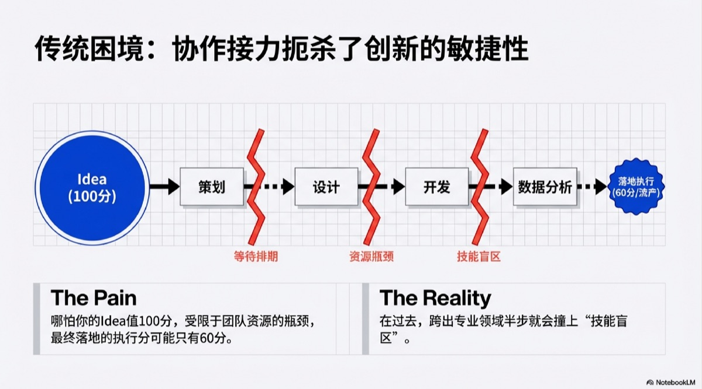

在上一代职场规则中，一个完整的价值交付（Project Delivery）被切分得支离破碎。
想象一下，你作为一名运营专家，想策划一场线上活动。在过去，这不仅是一次创意的迸发，更是一场漫长的"求人"马拉松：
你不仅需要懂策划（需求分析），还得去"跪求"设计师出海报、排期等前端写页面、最后还要等数据分析师给你跑复盘报表。
在这个链条里，你是被割裂的。无论是产品经理写竞品报告，还是HR做满意度调研，只要你稍微跨出自己的专业领域半步，就会撞上"技能盲区"的墙。
结论： 传统职场中，为了通过"技能关卡"所支付的沟通成本和时间成本，往往扼杀了创新的敏捷性。
AI带来的真正革命，并非仅仅是工具的升级，而是"技能边际成本"的归零。
正如英伟达CEO黄仁勋所言："AI让每个人都成为了程序员。"这句话的本质是——AI抹平了"想"与"做"之间的技术鸿沟。
过去（Execution-Heavy）： 你被定义为"执行者"。你的价值取决于你掌握了多少复杂的工具按键（Photoshop、Python、Excel公式）。
现在（Judgment-Heavy）： 你被重新定义为"编排者"。AI接管了所有确定性的"手脚功夫"，而你只需要负责最高维度的"大脑决策"。
这是一个"君子动口不动手"的时代：
很多人误读了AI时代，以为要学更多眼花缭乱的新工具。事实恰恰相反，这是一场"减法革命"。
我们正在经历从"技能型人才（Skill-based）"向"判断型人才（Decision-based）"的跃迁。你需要极度强化的，是以下三项"元能力"：
谁适合这篇指南？这不仅仅是一篇工具教程，它是为那些不满足于做"单点执行"、渴望拥有"端到端交付能力"的超级个体准备的。如果你想突破团队资源的桎梏，一个人活成一支队伍，那么请继续往下看。
AI不是魔法水晶球，它更像是一个刚入职的"高材生实习生"：能力超强，但不懂你的背景。你给的指令越模糊，它的产出就越平庸。
提示词（Prompt）黄金公式：
【角色】 你是电商领域的资深产品经理，擅长数据挖掘。
【任务】 请对比京东、拼多多、淘宝的会员体系。
【背景】 我们的目标是设计一套提升复购率的会员权益，目前痛点是用户留存低。
【格式】 请用表格对比三家的核心权益与定价，并在末尾针对我们的痛点给出3条差异化建议。
| 类别 | 首选 | 平替 | 开源 |
|---|---|---|---|
| 1. 对话 AI | Gemini | 豆包 | Qwen |
| 2. 图像生成 | Nano Banana Pro | 即梦 / 豆包 | Z-Image |
| 3. 视频生成 | Veo 3.1 | Seedance 1.5 Pro | Wan 2.2 |
| 4. 音频配音 | MiniMax / ElevenLabs | —— | IndexTTS2 |
| 5. 音乐生成 | Suno | Udio / Stable Audio | —— |
| 6. 数字人 | HeyGen | —— | Infinite Talk |
| 7. AI 浏览器 | Dia / Atlas | 豆包 / 夸克 | —— |
| 8. 编程工具 | Cursor | Trae | Claude Code & CodeX |
| 9. 知识库 | NotebookLM / 飞书知识问答 | ima | —— |
| 10. Agent | PA | AutoGLM / 扣子 | Deep Research |
这一阶段的核心心法是：凡是需要重复3次以上的任务，都应该尝试扔给AI。
痛点：对着几千字的访谈记录或满屏Excel数字头皮发麻。
AI解法：直接把文件丢进对话框。
指令："请分析这份用户访谈记录。1. 提取出现频率最高的3个痛点；2. 识别用户的情绪强烈程度；3. 用'痛点-频次-典型原话'的格式输出表格。"
效率：3小时 → 5分钟。
痛点：原型评审会上七嘴八舌，会后整理纪要像是在做听力理解。
AI解法：开启飞书会议的AI录制，导出文本。
指令："这是评审会记录。请帮我：1. 按'设计/开发/运营'分类整理反馈意见；2. 标记出P0级（必须改）的阻碍点；3. 生成一份待办清单（To-Do List）。"
痛点：要给20款新品写种草文案，写到第5个就词穷了。
AI解法：建立Few-Shot（少样本）学习。
指令："学习这3篇点赞过万的爆款笔记风格（粘贴案例）。然后针对这款[蓝牙耳机]，模仿上述风格生成3个版本的标题和正文，必须包含Emoji，结尾带软性引导。"
真实场景：
这是拉开差距的关键一步。你需要从"每次都要问AI"进化到"让AI自己动"。通过 Coze（扣子）、Aily 或 APPS，你可以搭建一个7x24小时待命的智能体（Agent）。
什么是"AI工作流"？简单说，就是把你的SOP（工作流程）固化下来，让AI按照步骤1、2、3自动跑完。
传统做法：每天早上花1小时刷竞品官网、看App Store评论，手动截图发群。
Agent工作流：
结果：你还在上班路上，竞品日报已经躺在群里了。
真实场景：
别被"开发"这个词吓跑。在AI时代，交付一个App或网站不再是程序员的特权，而是"超级个体"的标配能力。我们将项目交付拆解为两个层级：Level 1 快速原型验证 和 Level 2 全栈应用落地。
(适用场景：活动H5、内部工具、MVP快速验证、向老板演示Demo)
在这个阶段，你的目标不是写出完美代码，而是"所见即所得"。
第1步：AI参谋——理清What & Why
别急着动手，先让AI帮你做"可行性分析"。
指令："我想做一个员工积分系统，目标是提升活跃度。请帮我分析：1. 核心功能应该有哪些？2. 实现难度和风险点是什么？3. 给出3个低成本的技术方案。"
第2步：定义规则——生成"项目宪章"
用AI生成标准文档，显得专业且不遗漏。
指令："请为这个积分系统生成一份PRD（需求文档），包含：目标、功能清单（签到/兑换）、积分规则逻辑。输出格式要规范，适合给开发看。"
第3步：视觉设计——定下"UI基调"
不懂设计？找张参考图给AI。
指令：[上传参考图] "我想做一个类似的H5页面。主色调改为公司蓝（#1890FF），布局参考图片，但要把图标换成Emoji。请描述一下这个页面的UI设计Prompt。"
第4步：代码生成——HTML/CSS一把梭
这是见证奇迹的时刻。
指令："基于上面的需求和UI描述，请帮我生成一个单页面的HTML文件。要求：1. 包含完整的CSS样式；2. 用JavaScript模拟数据交互（不要后端）；3. 响应式布局，适配手机端。"
第5步：迭代打磨——像改PPT一样改代码
AI第一次生成的代码通常不完美，你需要学会"追问"。
指令："把积分数字的字体放大一倍"、"点击兑换时加一个弹窗确认"、"背景颜色太深了，调浅一点"。
第6步：一键发布——让全世界看到
不需要买服务器，直接用 LAUNCH 免费托管。
结果：你把AI生成的HTML文件上传，3分钟后，你就拥有了一个可以发给老板和同事点开即用的Web链接。
对于需要后端支持的项目（如带数据存储、用户登录的系统），整体流程与纯前端项目基本一致，但多了一个关键环节：
核心差异：
| 项目类型 | 推荐平台 | 原因 |
|---|---|---|
| 纯前端展示（无数据存储） | Apps平台 | 快速、简单，适合快速验证想法 |
| 需要后端（测试环境） | Launch平台 | 提供数据库和部署能力 |
| 需要后端（生产环境） | 自建服务器 + IDE工具 | 稳定、安全、可控 |
平台限制说明：
典型案例：安克餐厅系统、积分系统的迭代升级
关键要点：
真实项目链接：
典型案例：理发店预约系统、咖啡系统、嘉年华程序、年会网站
关键要点：与开发确认协作方式
在启动前，先和开发团队对齐："接口文档怎么写最方便你们开发？"（Swagger? Apifox? 简单表格?）"UI标注需要哪些信息？"（尺寸? 颜色代码? 交互说明?）
真实项目链接：
当我们谈论AI的未来时，如果你只盯着AGI（通用人工智能），可能看偏了。在AGI真正到来之前，我看好一个更具体、更具颠覆性的技术趋势——嵌套学习（Nested Learning）。
别被这个学术名词吓到。简单说，它是让软件从"千人一面"变成"千人千面"的关键技术。
想象你在学做菜：
在AI领域，这意味着一个模型内部还"嵌套"着另一个专门负责自我反思和进化的小模型。外层负责"执行命令"；内层负责"观察你，适应你，优化自己"。
现在的App是"固体"的：按钮在哪里、功能怎么用，都是产品经理定死的。未来的App是"流体"的：
现状：客服机器人只会机械地回复"亲，请稍等"。
未来：嵌套模型能实时感知你的情绪波动。发现你打字速度变快、用词激烈（情绪层），它会立刻跳过标准话术，直接切换到"高效解决模式"（执行层）。
未来的软件不再是一次性买断的功能包，而是一个"数字养成系伙伴"。
回顾全文，我们谈了认知的重构、工具的SOP，以及未来的进化。AI时代最大的陷阱，不是"被AI取代"，而是"被会用AI的人降维打击"。
从今天起，请尝试做三件事：
种一棵树最好的时间是十年前，其次是现在。掌握AI最好的时间，就是此刻。